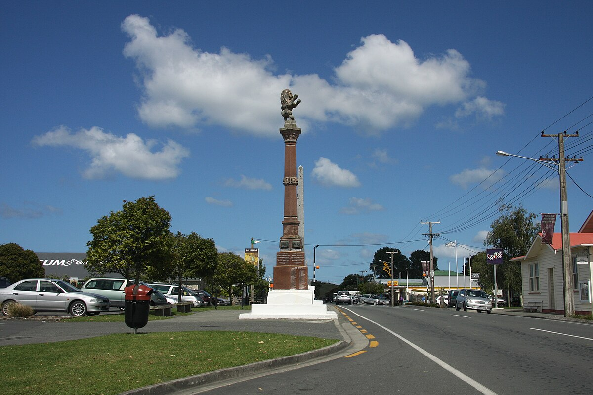

The Bay of Islands is an elegant, vast and stunning district on the beautiful east coast of Northland, New Zealand. The 144 subtropical islands are centred around the main hub of Paihia, Opua and Waitangi, our nation’s birthplace. Where you can find most of the water-based activities of the area. Go out on a cruise to check out the wildlife or the breathtaking scenery. Go swimming, snorkelling, scuba diving, kayaking and sailing. Across the water from Paihia is Russell, the first capital of New Zealand which is surrounded by history. Inland are the towns of Kerikeri, Kawakawa and Kaikohe where there are heaps of natural features, historical sites and great food to experience, not to mention the array of award-winning wineries to indulge in.
Embark on an extraordinary journey to the Bay of Islands with our specially curated routes, showcasing the hidden gems of Northland, New Zealand! While Brynderwyn Hills road is undergoing maintenance, make the most of your detour by exploring the captivating destinations. Will you start your adventure by basking in the beauty of Waipu? Where Waipu Cove awaits with its pristine beach. Take a refreshing dip in the crystal-clear waters and relish the coastal vibes. Don’t miss a chance to rejuvenate at the Cove Cafe, offering spectacular views of the ocean. Maybe you will venture to the tranquil Kai Iwi Lakes, surrounded by lush native bush. Immerse yourself in nature’s tranquillity as you enjoy activities like kayaking or simply unwinding by the lakeside. It’s a perfect spot for a peaceful escape. As you continue your road trip, make a pit stop in Dargaville, known for its rich history and the iconic Kauri Museum. Discover the fascinating tales of the mighty kauri trees and the timber industry that shaped the region. Take a scenic drive to Pararoa, where the majestic Pouto Peninsula offers panoramic views of the Kaipara Harbour. Climb the iconic Pouto Lighthouse for breathtaking vistas, making it an ideal spot for capturing memories. Route A takes you on a journey to Mangawhai, a coastal paradise with its beautiful estuary and pristine beaches. Explore the Mangawhai Heads, known for its surfing and water activities, or unwind at the local vineyards for a taste of the region’s finest wines.
